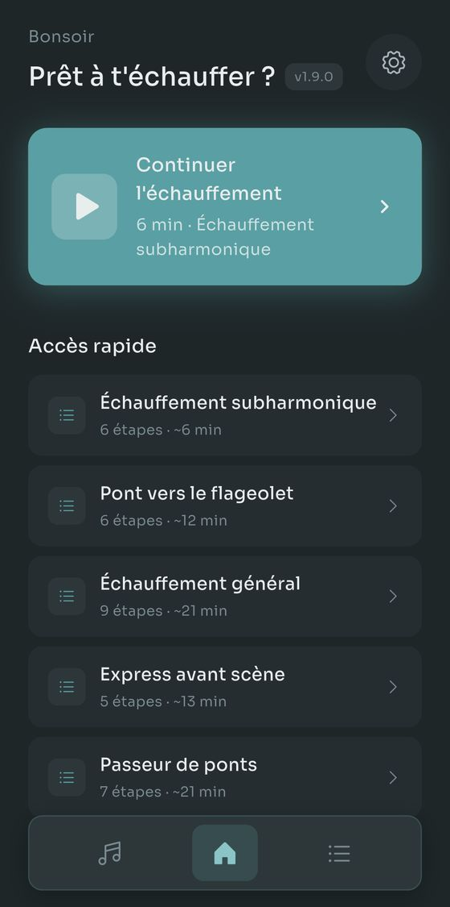
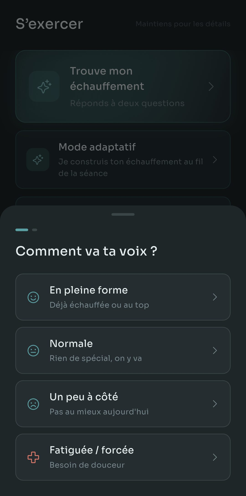
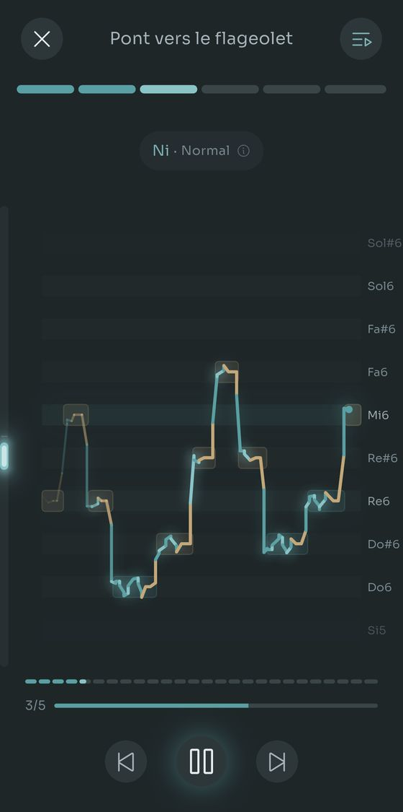
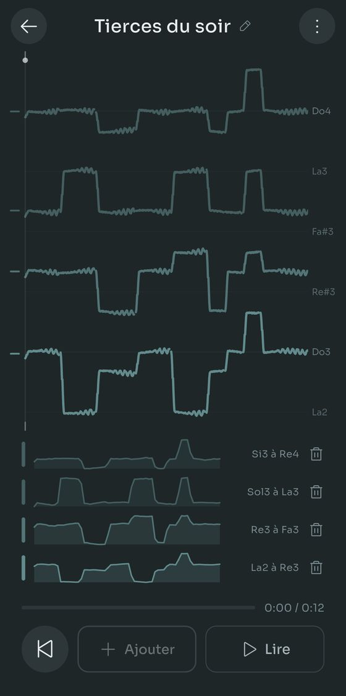
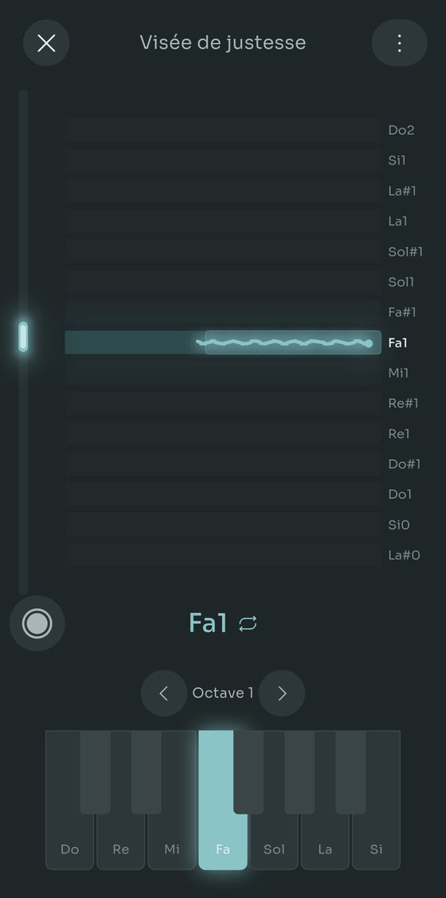
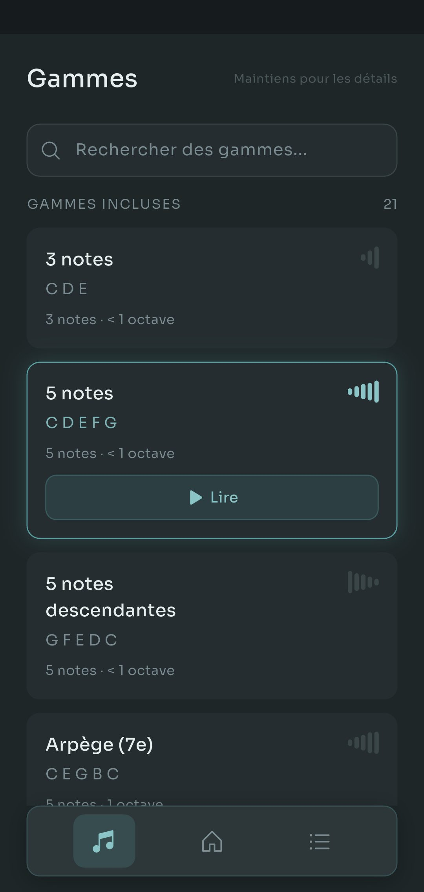

Scalita joue des gammes sur un Salamander Grand Piano pendant que tu chantes. Tu règles ta tessiture une fois, et chaque exercice se transpose pour s'y adapter.
Gammes simples. Vrai piano. Sans chichis.






Rien à lire avant, rien à créer comme compte.
Chante dans ton téléphone et Scalita trouve ta note la plus grave et la plus aiguë. Ou choisis un type de voix et passe l'étape.
21 gammes et 14 routines sont incluses. Tu hésites ? Réponds à deux questions et Trouver mon échauffement choisit pour toi.
Le piano joue le motif, monte d'un demi-ton et le rejoue, le tout dans la tessiture que tu as réglée.
De vrais échantillons de Salamander Grand Piano sur les 88 touches, de La0 à Do8. Aussi grave ou aigu que tu chantes, il existe une note enregistrée pour ça.
Enregistre une ligne. Chante-en une deuxième par-dessus et écoute les deux ensemble. Jusqu'à quatre voix, et une voix peut être une prise au micro, un fichier que tu avais déjà ou une gamme jouée par l'application.
Enregistrer est gratuit. Les quatre voix aussi, et la durée aussi. Pro n'intervient que si tu veux conserver plus d'une harmonie à la fois, et tu peux toujours en construire une autre entièrement et garder celle-là à la place.
Le reste de l'application, en quatre morceaux. Rien de tout ça ne te gêne le premier jour.
Trouver mon échauffement demande comment va ta voix aujourd'hui et ce que tu veux travailler, puis choisit la routine et règle le tempo. Le Mode adaptatif abandonne carrément le plan : après chaque exercice tu dis comment ça s'est passé et le suivant s'ajuste. Dis-lui que tu as dix minutes et il répartit toute la séance pour tenir dedans, retour au calme compris.
Mets des écouteurs et un tracé en direct montre où tu tombes sur chaque note, vert quand c'est juste et ambre quand tu dérives. Le travail de justesse réduit ça à une touche à la fois, et il garde maintenant tes prises : l'audio, la ligne de justesse et ce que faisait le clavier, pour en rouvrir une la semaine prochaine et entendre si quelque chose a bougé.
La plupart des applications d'échauffement s'arrêtent à la voix de poitrine et de tête. Règle une étendue pour chaque registre que tu utilises vraiment et trois routines dédiées s'ouvrent : la vibration sous ta voix de poitrine, le timbre de flûte au-dessus de ton étendue, et le sifflet encore au-dessus. Indique aussi ton passage de voix, et les exercices se construisent autour.
Construis des gammes et des routines à partir de rien : intervalles, syllabes, tempos, note de départ. Ou chante ou joue un motif dans le détecteur de gammes et il écrit les notes pour toi. Refait pour la 1.9.0, il demande environ deux fois moins de corrections sur du vrai chant, et il signale les notes qui se jouaient à pile ou face pour que tu saches où regarder.
Toutes les fonctions marchent gratuitement. Pro lève les limites sur ce que tu conserves.
Un seul paiement, pas d'abonnement. Le prix de chaque pays est fixé par Google Play.
Gratuit sur Google Play. Sans compte, sans pub, rien à résilier.
Android uniquement pour l'instant. En français, anglais, espagnol, portugais et allemand.